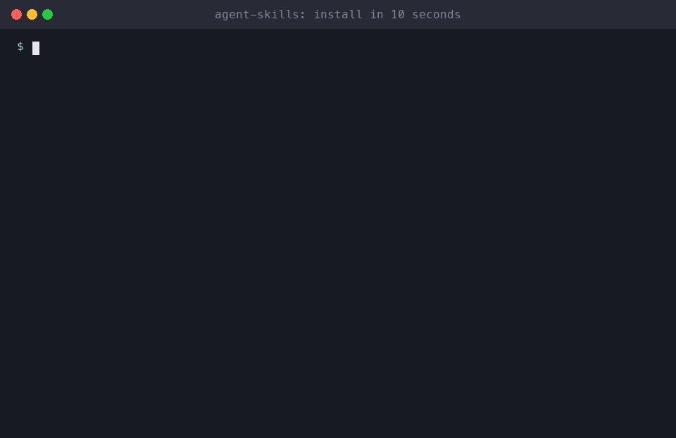

48 Agent Skills for Claude Code, Cursor & Codex
Free, open-source SKILL.md workflows: an AI agent for every social platform (Instagram, TikTok, YouTube, LinkedIn, X), senior-engineer dev workflows, and fun ones like roast-my-github.
Install in 10 seconds🔥 Roast my GitHub⭐ Star on GitHub
Install
# Claude Code
/plugin install all-skills --marketplace milad-ahmd/agent-skills
# Cursor, Codex, Cline, Windsurf, Copilot + 75 more agents
npx skills add milad-ahmd/agent-skills
# Shell (any agent that reads ~/.claude/skills)
curl -fsSL https://raw.githubusercontent.com/milad-ahmd/agent-skills/main/install.sh | bashGuides
Packs: install by who you are
🎒 indie-hacker-pack
startup-idea-validator, landing-page-roaster, launch-post-writer, readme-glow-up, app-store-optimizer, seo-blog-writer…
/plugin install indie-hacker-pack --marketplace milad-ahmd/agent-skills
🎒 creator-pack
social-media-manager, instagram-growth-manager, tiktok-viral-creator, youtube-seo-optimizer, youtube-script-writer, content-repurposer…
/plugin install creator-pack --marketplace milad-ahmd/agent-skills
🎒 marketer-pack
social-media-manager, brand-voice-guide, ad-copy-generator, email-campaign-writer, seo-blog-writer, competitor-spy…
/plugin install marketer-pack --marketplace milad-ahmd/agent-skills
🎒 local-business-pack
social-media-manager, instagram-growth-manager, social-media-calendar, brand-voice-guide
/plugin install local-business-pack --marketplace milad-ahmd/agent-skills
🎒 startup-cto-pack
pr-reviewer-pro, incident-commander, cost-cutter, env-secrets-guard, dependency-doctor, migration-wizard…
/plugin install startup-cto-pack --marketplace milad-ahmd/agent-skills
🎒 developer-pack
pr-reviewer-pro, commit-craft, test-gap-hunter, env-secrets-guard, dependency-doctor, dockerize-anything…
/plugin install developer-pack --marketplace milad-ahmd/agent-skills
🎒 skill-builder-pack
skill-creator-pro, skills-doctor, agent-memory-keeper, prompt-injection-scanner
/plugin install skill-builder-pack --marketplace milad-ahmd/agent-skills
🎒 fun-pack
roast-my-github, codebase-time-machine, landing-page-roaster, ai-slop-detector
/plugin install fun-pack --marketplace milad-ahmd/agent-skills
Fun & Viral
⏳ codebase-time-machine
The story of your repo from git history, as a documentary: eras, cast, plot twists, cursed files
🔥 roast-my-github
Get your GitHub profile roasted with real data, then a scorecard and glow-up plan
Social Platforms
Marketing
📣 ad-copy-generator
Ad copy for Meta, TikTok, Google and YouTube within each platform's limits, plus an A/B test matrix
🎨 brand-voice-guide
A brand voice, positioning and personas guide, then rewrites copy on-brand
🕵️ competitor-spy
Competitor analysis of pricing, messaging, socials, ads and reviews, with a SWOT and opportunities
♻️ content-repurposer
One video or podcast into 15+ posts: Shorts, Reels, threads, LinkedIn, carousel, newsletter
📧 email-campaign-writer
Welcome, launch, cart and newsletter email sequences with subject-line tests
🪝 hook-generator
Scroll-stopping hooks for videos, posts, emails and ads, scored and ranked
🤝 influencer-outreach
Influencer and UGC campaigns: vetting, outreach DMs, briefs and tracking
📸 instagram-growth-manager
Grow and manage Instagram with bio audits, Reels scripts, carousels, captions, hashtags and growth reviews
✍️ seo-blog-writer
SEO blog posts that rank: intent research, outline, meta tags, FAQ and schema
📊 social-analytics-reporter
Social media analytics exports into a clear report with KPIs, reasons and next actions
🗓️ social-media-calendar
Monthly cross-platform content calendar, exported as CSV for Notion, Sheets, Buffer or Later
🎵 tiktok-viral-creator
TikTok ideas, 2-second hooks, shot-by-shot scripts and retention analysis
🎬 youtube-script-writer
High-retention YouTube and Shorts scripts with hooks, open loops and B-roll cues
📺 youtube-seo-optimizer
YouTube titles, thumbnails, descriptions, chapters and channel audits for more views
Agent Productivity
🧠 agent-memory-keeper
Project memory (MEMORY.md) plus session handoffs (HANDOFF.md) so the next session picks up where this one stopped
🛠️ skill-creator-pro
Turn any workflow into a well-written SKILL.md, with a linter to validate it
🩺 skills-doctor
Audit your installed skills for broken frontmatter, vague triggers, conflicts and leaked secrets
Founders
Growth
📱 app-store-optimizer
App Store and Google Play ASO: keywords, titles, screenshot captions, review replies, A/B tests
🎬 demo-recorder
Record a real demo GIF or video of your CLI or web app for the README and launch posts
🔥 landing-page-roaster
Honest, funny, scored roast of your landing page plus copy rewrites
🚀 launch-post-writer
Turn your repo into an X thread, Show HN, LinkedIn and Reddit launch posts
Writing
DevOps
💸 cost-cutter
Cut cloud, SaaS and LLM API bills with dollar estimates, effort, risk and exact fixes
🐳 dockerize-anything
Production-ready, small, secure Dockerfile and compose for any repo
🚨 incident-commander
Run a production outage from triage to mitigation, status updates and a blameless postmortem
Git & Workflow
📝 changelog-from-git
Polished release notes and CHANGELOG entries from git history
🧱 commit-craft
Turn messy changes into clean, atomic Conventional Commits
📋 meeting-notes-to-tickets
Meeting notes into de-duplicated GitHub, Linear or Jira tickets
📐 plan-griller
Grill you on a feature plan against your real code, then write a testable SPEC.md
🔎 pr-reviewer-pro
Senior-engineer PR reviews with severity levels, file:line evidence and suggested fixes
Testing & Quality
🕵️ bug-detective
Debug by reproducing first, logging hypotheses and auto-bisecting the commit that broke it
🎭 e2e-flow-tester
Find your app's critical user flows and write Playwright end-to-end tests for them
🧪 test-gap-hunter
Find the riskiest untested code and write real tests for it
Security & Maintenance
🩺 dependency-doctor
Audit vulnerable, outdated and unused packages with a safe upgrade plan
🔐 env-secrets-guard
Find leaked API keys and secrets before they hit GitHub
🛡️ gh-actions-auditor
Find pwn requests, script injection and unpinned actions in GitHub Actions, then fix them
🪤 prompt-injection-scanner
Scan skills, CLAUDE.md, hooks and MCP configs for prompt injection and hidden instructions
Backend & Data
🔌 api-to-sdk
Typed, idiomatic client SDK from an OpenAPI spec or your backend routes
⚡ sql-optimizer
Explain slow SQL queries and get index and rewrite fixes
Frontend
♿ a11y-fixer
WCAG 2.2 AA audit that fixes accessibility issues in your code
🖼️ screenshot-to-component
Screenshot or mockup to a component built with your design system
Refactoring
Documentation
🗺️ codebase-explainer
Onboarding guide built from a real import graph: entry points, hubs, cycles, Mermaid and an interactive map
✨ readme-glow-up
Turn any README into a star magnet using only facts from your repo
FAQ
What are Agent Skills?
Agent Skills are folders with a SKILL.md file: a YAML name and description, then instructions and optional scripts. AI agents like Claude Code load a skill automatically when your request matches its description, so they follow a proven workflow instead of improvising.
Which AI agents do these skills work with?
Claude Code natively, through its plugin marketplace. Cursor, Codex, Cline, Windsurf, GitHub Copilot, Gemini CLI, OpenCode and 75+ other agents work through npx skills. Any agent can also use a SKILL.md pasted into its rules file.
How do I install all skills in Claude Code?
Run /plugin install all-skills --marketplace milad-ahmd/agent-skills inside Claude Code, or install a role pack such as creator-pack or startup-cto-pack.
Is there an AI agent skill for Instagram, TikTok and YouTube?
Yes: instagram-growth-manager, tiktok-viral-creator, youtube-seo-optimizer and youtube-script-writer. social-media-manager coordinates them and handles LinkedIn, X, Facebook, Pinterest, Threads, Reddit, Telegram, WhatsApp and Google Business Profile itself.
Are the skills free?
Yes. All 48 skills are open source under the MIT license. They are plain Markdown with optional Python scripts that use only the standard library, and they need no paid API.